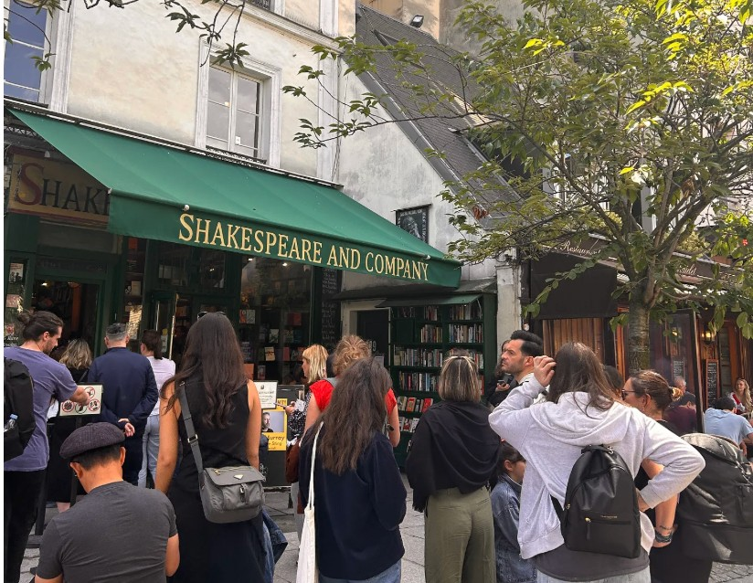

the book I didn't read

Whirrrr…
Just as I reach for Anna Karenina on the shelf, the smell of freshly roasted beans, ground and poured, pulls my hand off course. Although I've never really been a coffee person, the smell of it somewhere like this has always undone me a little. I open the book to a random page, and the first thing I see, "Go and speak to her, she likes you so much," before I can choose. I let out a breathe as I smiled. I relaxed into the wall in my lazy slant position and kept reading as Tangerine played in my headphones; Led Zeppelin created magic. Somewhere the grinder whirs again.
A tap on my shoulder pulls me out. The shelves come back first, then the warm light, then her. Bright eyes. Massive round hoops. A patchwork skirt in a dozen soft colors. And that Shakespeare and Company tote slung over her shoulder like she'd walked straight out of a Paris afternoon. I can't move my eyes. She's saying something, but Tangerine is still playing, loud and golden. I pulled one of the wired buds from my ear.
"I'm sorry!"
She smiles and I already know this one's going to hurt later. "You dropped your train ticket," she says. Train ticket? I'm still catching up, still trying to figure out what she means, when she hits me with another one — "Are you coming from Boston?"
"No! Wait, this isn't mine."
She turns red immediately. "Oops." And I see it all in her face at once, the embarrassment, the shyness, the small awkwardness she's trying to smile through. If she were wine, I could stand there listing every tannin and pretend to be an expert.
The devils on my shoulders came to a consensus for the first time and told me I shouldn't let this end here. So I say the first thing that comes to me — "How did you like Paris?" — because I'm distracted by the Shakespeare and Company tote on her shoulder that my brain convinced itself she's just come back from there.
She laughs. "I actually got it from a thrift store."
And she tells me about the place, some little shop she found across the river, the kind with the good kind of clutter, everything smelling faintly of other people's lives. She's so excited when she talks about it. Her hands move, her eyes shine, I don't know what I'm feeling but I'm loving it.
By the time she finishes, I realize we've been walking. Past philosophy. Past art. Past history, past the comics. We stop, without meaning to, in fiction. And somewhere behind us, poor Anna Karenina, still waiting.
I had come here for her.
Whirrrr….